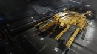

Макс. груз
~406 т
Отличный средний торговый корабль. Возит больше, чем крупный Type-7, садится на большинстве станций и прочнее старых грузовиков. По тоннажу уступает лишь большим тяжеловозам, а среди кораблей для средних площадок равных ему нет. Цена — ~35 млн кр., требований к рангу нет.

Пригодность корабля оценивается по шкале 1–100 при полностью доработанном инженерами оснащении для этой роли, в сравнении со всеми конкурентами. См. как оцениваются корабли.
Type-8 Transporter — современный средний грузовик Lakon, который изменил правила игры. Он берёт больше 400 тонн, больше крупного Type-7, которому нужна большая площадка, и садится на среднюю площадку на подавляющем большинстве станций. Для торговца, которому важен выбор станций, это сочетание меняет всё.
Он также прочнее и быстрее старых грузовиков. Дополнительных отсеков хватает и на большой трюм, и на серьёзный щит. По тоннажу с большими тяжеловозами он не сравнится, а за ~35 млн кр. стоит дороже бюджетных средних кораблей. Но по вместимости на средней площадке ему нет равных, и этот прочный современный Type-8 не случайно стал первым выбором для средней торговли.
Вместительные и гибкие перевозки: торговые рейсы на станции со средними площадками, куда не сядут крупные грузовики, доставка грузов по заданиям и любая торговля, где важны и вместимость, и выбор станций.
Четыре качества делают Type-8 лучшим средним грузовиком:
Берёт заметно меньше больших тяжеловозов — примерно половину от груза Type-9 или Cutter, поэтому за максимальным тоннажем стоит идти не к нему. За ~35 млн кр. он ощутимо дороже бюджетных средних кораблей вроде Type-6. Сильная сторона Type-8 — лучшая вместимость среди кораблей для средних площадок площадок. Если вы пользуетесь только большими, крупный грузовик увезёт гораздо больше.
Берёт больше любого корабля для средних площадок: ~406 т под хорошим щитом без требования к рангу. Но это лишь около половины груза Type-9 или Cutter, что ограничивает торговую оценку.
Итоговый балл 76/100 отражает результат по критериям торговой роли в порядке важности. У каждого критерия есть вес (доля от 100). Корабль набирает часть баллов по каждому критерию в зависимости от результата на фоне конкурентов. Баллы складываются в итоговую оценку.
| Критерий роли | Баллы | Обоснование |
|---|---|---|
| Максимальный груз | 26/35 | ~406 т после инженерных улучшений — с большим отрывом лучший показатель среди средних. Это больше, у крупного Type-7 с его ~310 т, и более чем в 2 раза больше, чем у Type-6 с его ~110 т. Но это примерно половина от ~790-1048 т крупных тяжеловозов Type-9, Cutter и Panther Clipper, поэтому абсолютным лидерам по тоннажу корабль уступает. |
| Посадочная площадка и доступ к рынкам | 18/20 | Средняя площадка открывает подавляющее большинство станций и большинство аванпостов, а значит маршруты и рынки, недоступные крупным грузовикам. В сочетании с максимальной вместимостью среди средних кораблей это лучший доступ к рынкам в торговой роли. |
| Дальность прыжка с грузом | 9/15 | ~32 св. лет с грузом после инженерных улучшений (G5, увеличенная дальность и управление массой на FSD размера 5) подходят для торговли, но не впечатляют. Корпус массой 400 т с двигателем размера 5 показывает средний результат и заметно уступает более лёгким кораблям или моделям с более крупным FSD. |
| Живучесть | 15/20 | Хорошая для грузовика. 4 внешних крепления, двухконтурный щит размера 6 с усилением G5, два усилителя с усиленной конструкцией и форсаж до 340 м/с (~380 с инженерами) делают его гораздо более трудной добычей, чем разоружённый Type-9. Но перед боевым кораблём он всё ещё уязвим. |
| Скорость и цена | 8/10 | 200/340 м/с на обычной тяге и форсаже — быстро для грузовика. Он уходит от перехватов, где крупным грузовикам не скрыться. Корпус за ~34.8 млн кр. (~52 млн за всё) без требований к рангу или разрешению стоит между бюджетными средними кораблями и крупными грузовиками. |
| Итог с учётом весов | 76/100 | Совпадает с итоговой оценкой пригодности корабля к этой роли. |
Вес каждого критерия отражает редакционный порядок приоритетов роли, а не игровую формулу. Длина полосы показывает набранную долю баллов. Самые длинные полосы сильнее всего подняли оценку, самые короткие показывают слабые стороны. См. как оцениваются корабли.
Все таблицы сравнивают корабли именно в торговой роли, отдельно для каждого размера площадки. Столбец Макс. груз показывает максимальный тоннаж под защитой щита. Оценка та же, что и на остальном сайте: по шкале 1–100.
| Корабль | Класс | Макс. груз | Плюсы и минусы | Оценка |
|---|---|---|---|---|
| Type-8 Transporter этот | Средний | ~406 т | — этот корабль (точка отсчёта) | 76 |
| Corsair | Средний | ~318 т | Доступ к рынкам; скорость и ценаОценка ниже; дальность с грузом | 74 |
| Python | Средний | ~294 т | Доступ к рынкам; живучестьОценка ниже; скорость и цена | 72 |
| Type-6 Transporter | Средний | ~114 т | Доступ к рынкам; скорость и ценаОценка ниже; живучесть | 65 |
| Krait Mk II | Средний | ~230 т | Живучесть; доступ к рынкамОценка ниже; дальность с грузом | 64 |
| Krait Phantom | Средний | ~190 т | Дальность с грузом; доступ к рынкамОценка ниже; живучесть | 62 |
| Type-11 Prospector | Средний | ~288 т | Доступ к рынкам; живучестьОценка ниже; скорость и цена | 60 |
| Asp Explorer | Средний | ~130 т | Дальность с грузом; доступ к рынкамОценка ниже; живучесть | 58 |
| Keelback | Средний | ~98 т | Живучесть; доступ к рынкамОценка ниже; груз | 52 |
Оценены 9 торговых кораблей для средних площадок. Лидер — Type-8 Transporter (76). Все соперники этого класса садятся там же, где и этот корабль: это его прямые конкуренты.
| Корабль | Класс | Макс. груз | Плюсы и минусы | Оценка |
|---|---|---|---|---|
| Panther Clipper Mk II | Большой | ~662 т | Оценка выше; груз; доступ к рынкамСкорость и цена | 98 |
| Imperial Cutter | Большой | ~794 т | Оценка выше; живучесть; доступ к рынкамСкорость и цена | 95 |
| Type-9 Heavy | Большой | ~790 т | Оценка выше; груз; доступ к рынкамЖивучесть | 94 |
| Type-7 Transporter | Большой | ~310 т | Оценка выше; дальность с грузом; грузЖивучесть | 78 |
| Anaconda | Большой | ~470 т | Дальность с грузом; живучестьСкорость и цена | 76 |
| Imperial Clipper | Большой | ~250 т | Скорость и цена; живучестьОценка ниже; груз | 74 |
| Federal Corvette | Большой | ~618 т | Живучесть; грузОценка ниже; скорость и цена | 70 |
| Type-10 Defender | Большой | ~534 т | Живучесть; доступ к рынкамОценка ниже; дальность с грузом | 68 |
| Caspian Explorer | Большой | ~434 т | Доступ к рынкам; живучестьОценка ниже; дальность с грузом | 66 |
| Beluga Liner | Большой | ~370 т | Доступ к рынкам; живучестьОценка ниже; дальность с грузом | 58 |
Среди торговых кораблей для больших площадок (оценено 10) лидирует Panther Clipper Mk II (98). Эти корабли требуют более крупных площадок и больших затрат. По показателям они превосходят этот корабль, но относятся к другому посадочному классу.
| Корабль | Класс | Макс. груз | Плюсы и минусы | Оценка |
|---|---|---|---|---|
| Cobra Mk IV | Малый | ~92 т | Скорость и цена; доступ к рынкамОценка ниже; живучесть | 52 |
| Cobra Mk V | Малый | ~110 т | Доступ к рынкам; скорость и ценаОценка ниже; живучесть | 52 |
| Cobra Mk III | Малый | ~64 т | Скорость и цена; доступ к рынкамОценка ниже; груз | 48 |
| Dolphin | Малый | ~88 т | Доступ к рынкам; дальность с грузомОценка ниже; живучесть | 46 |
| Hauler | Малый | ~26 т | Доступ к рынкам; скорость и ценаОценка ниже; груз | 42 |
Среди торговых кораблей для малых площадок (оценено 5) лидирует Cobra Mk IV (52). Они дешевле и садятся на меньших площадках; могут быть выгоднее по показателям, но относятся к другому посадочному классу.
За ~34.8 млн кр. Type-8 стоит дороже бюджетных средних кораблей, но гораздо дешевле крупных грузовиков. Требований к рангу нет, а торговая сборка целиком обойдётся примерно в 52 млн кр.
Разумный выбор среди средних торговых кораблей: больше места для груза, чем у любого одноклассника, широкий выбор станций и прочный современный корпус за небольшую долю цены крупного грузовика. Для большинства торговцев, которым важен выбор станций, это оптимальный вариант.
Около 52 млн кр. за всё, чтобы возить максимум на средней площадке. Груза больше, чем у крупного Type-7, а садится там, где крупным грузовикам нельзя. Современный средний грузовик, который можно брать по умолчанию.
Вместительная торговая сборка для средних площадок со щитом. Начальный вариант собирается простой покупкой; класс A — базовый торговый вариант; инженерный доводит до максимума вместимость под щитом и дальность с грузом.
| Отсек | Начальное · только покупка | Класс A · без инженеров | С инженерными улучшениями | Примечания |
|---|---|---|---|---|
| Внешние крепления | ||||
| Крепление 1 | 0E Усилитель щита | 0A Усилитель щита | G5 Усиленная конструкция + Суперконденсаторы | Первый усилитель щитас усиленной конструкцией кратно увеличивает номинальную прочность двухконтурного щита в МДж, защищая трюм. |
| Крепление 2 | — | 0A Усилитель щита | G5 Усиленная конструкция + Суперконденсаторы | Второй усилитель с усиленной конструкцией — самый дешёвый способ заметно укрепить щит грузовика. |
| Крепление 3 | — | 0I Точечная защита | G1 Боезапас (без экспериментального эффекта) | Необязательно, низкий приоритет: улучшение боезапаса добавляет выстрелов. Точечная защита сбивает подлетающие ракеты и торпеды. |
| Крепление 4 | — | 0I Теплоотводная катапульта | G1 Боезапас (без экспериментального эффекта) | Необязательно, низкий приоритет: улучшение боезапаса добавляет заряды катапульты. Модуль сбрасывает нагрев при бесшумном ходе и позволяет начать охлаждение заново с тепловым отводом. |
| Основные модули | ||||
| Обшивка | Лёгкий сплав | Лёгкий сплав | G5 Облегчение (без экспериментального эффекта) | |
| Силовая установка | 5E Силовая установка | 5A Силовая установка | G5 Снижение теплоотдачи + Рассеивание тепла | Установка 5A питает щит, накопитель и модули. Снижение теплоотдачи помогает идти холоднее и тише, а рассеивание тепла избавляет от лишнего нагрева. |
| Маневровые двигатели | 5E Маневровые двигатели | 5A Маневровые двигатели | G5 Грязная настройка двигателей + Форсированные двигатели | Класс A и грязная настройка двигателей дают скорость, нужную для отхода после перехватов, от которых не уйдут крупные грузовики. |
| Рамочно-сместительный двигатель (FSD) | 5E Рамочно-сместительный двигатель (FSD) | 5A Рамочно-сместительный двигатель (FSD) | G5 Увеличенная дальность + Управление массой | Класс A с улучшением «Увеличенная дальность» и управлением массой увеличивает дальность прыжка с грузом на торговых маршрутах. |
| Система жизнеобеспечения | 3E Система жизнеобеспечения | 3D Система жизнеобеспечения | G5 Облегчение (без экспериментального эффекта) | Класс D экономит массу; Облегчение снижает её ещё сильнее. У системы жизнеобеспечения нет экспериментального эффекта. |
| Распределитель энергии | 4E Распределитель энергии | 4A Распределитель энергии | G5 Приоритет двигателей + Кластерные конденсаторы | Слабое место Type-8 — распределитель размера 4. Поставьте класс A и Приоритет двигателей, чтобы хватало заряда на повторный форсаж при отходе. |
| Датчики | 3E Датчики | 3D Датчики | G5 Облегчение (без экспериментального эффекта) | Поставьте класс D и облегчение. Дальность датчиков в торговле не нужна, лучше сэкономить массу. |
| Топливный бак | 5C Топливный бак | 5C Топливный бак | (Чертёж недоступен) | Штатный бак размера 5: ёмкость фиксирована, инженерных улучшений нет. |
| Дополнительные отсеки | ||||
| Размер 7 | 7E Грузовой стеллаж | 7E Грузовой стеллаж | (Чертёж недоступен) | Необязательно: добавляет грузовое место, полезно специализированным грузовикам. Грузовые стеллажи не улучшаются у инженеров. |
| Размер 6 | 6E Грузовой стеллаж | 6E Грузовой стеллаж | (Чертёж недоступен) | Необязательно: добавляет грузовое место, полезно специализированным грузовикам. Грузовые стеллажи не улучшаются у инженеров. |
| Размер 6 | 6E Грузовой стеллаж | 6E Грузовой стеллаж | (Чертёж недоступен) | Необязательно: добавляет грузовое место, полезно специализированным грузовикам. Грузовые стеллажи не улучшаются у инженеров. |
| Размер 6 | 6E Генератор щита | 6C Генератор двухконтурного щита | G5 Усиление + Быстрая зарядка | Двухконтурный щит размера 6 стоит 64 т потерянной вместимости, зато быстро восстанавливается и защищает трюм. Усиление даёт максимум МДж, быстрая зарядка ускоряет восстановление. |
| Размер 5 | — | 5E Грузовой стеллаж | (Чертёж недоступен) | Необязательно: добавляет грузовое место, полезно специализированным грузовикам. Грузовые стеллажи не улучшаются у инженеров. |
| Размер 5 | — | 5E Грузовой стеллаж | (Чертёж недоступен) | Необязательно: добавляет грузовое место, полезно специализированным грузовикам. Грузовые стеллажи не улучшаются у инженеров. |
| Размер 4 | — | 4E Грузовой стеллаж | (Чертёж недоступен) | Необязательно: добавляет грузовое место, полезно специализированным грузовикам. Грузовые стеллажи не улучшаются у инженеров. |
| Размер 2 | — | 2A Накопитель щита | G4 Специализация (без экспериментального эффекта) | Необязательно, низкий приоритет: специализация снижает нагрев и скачок энергопотребления накопителя. Быстро восстанавливает щит в экстренной ситуации. |
| Размер 1 | — | 1H Усилитель FSD Стражей | (Чертёж недоступен) | Необязательно, низкий приоритет: расширенное сканирование зондами увеличивает площадь охвата. Модуль картографирует планеты для получения исследовательских данных. |
| Открытие в планировщике и экспорт | ||||
| Открыть в Coriolis | открыть | открыть | открыть | Открывается на coriolis.io одним нажатием. |
| Открыть в EDSY | открыть | открыть | открыть | Открывается на edsy.org одним нажатием. |
| Скопировать SLEF | Копирует исходные данные оснащения для этого варианта в формате SLEF. | |||
Просторные отсеки Type-8 позволяют везти больше 330 тонн, сохраняя двухконтурный щит размера 6 и усилители. Это надёжнее, чем незащищённый Type-9. Летайте со щитом: средняя площадка всё равно открывает доступ к более безопасным и прибыльным станциям.
Купите корпус и заполните три самых больших дополнительных отсека. Нужны грузовые стеллажи — один 7E и два 6E — под защитой генератора щита 6E. Это обычный генератор размера 6, в начальной сборке он ещё не двухконтурный.
Остаётся штатная Лёгкий сплав обшивка. На торговом корабле тяжёлая броня только съедает дальность прыжка и грузоподъёмность, поэтому этот отсек остаётся штатным во всех вариантах.
Основные модули остаются штатными, класса E: силовая установка размера 5, маневровые двигатели и FSD, распределитель размера 4.
Один усилитель щита 0E ставится в первое внешнее крепление. Три остальных и малые дополнительные отсеки (размеры 5, 5, 4, 2, 1) пустуют до перехода на класс A.
Порядок перехода на класс A для среднего грузовика:
Скорость позволяет Type-8 уходить от перехватов, от которых не уйти большим грузовикам. Поставьте класс A на маневровые двигатели и оставьте щит — получится живучий торговый корабль. Обшивка остаётся из материала Лёгкий сплав на всех этапах. Масса брони снизит дальность и грузоподъёмность, а настоящую защиту дают двухконтурный щит и накопитель.
Инженерная схема для торговли: дальность, подвижность и защита. Felicity Farseer на максимальном уровне доступа отвечает за FSD; закрепите чертежи, чтобы применять улучшения G1→G5 удалённо.
| Модуль | Чертёж | Экспериментальный эффект | Инженер |
|---|---|---|---|
| Рамочно-сместительный двигатель (FSD) (5) | Увеличенная дальность (G5) | Управление массой | Felicity Farseer |
| Маневровые двигатели (5) | Грязная настройка двигателей (G5) | Форсированные двигатели | Professor Palin / Mel Brandon |
| Силовая установка (5) | Снижение теплоотдачи (G5) | Рассеивание тепла | Hera Tani |
| Распределитель энергии (4) | Приоритет двигателей (G5) | Кластерные конденсаторы | The Dweller |
| Двухконтурный щит (6) | Усиление (G5) | Быстрая зарядка | Lei Cheung |
| Усилители щита | Усиленная конструкция (G5) | Суперконденсаторы | Didi Vatermann |
| Система жизнеобеспечения / Датчики | Облегчение (G5) | — | Etienne Dorn |
| Обшивка | Облегчение (G5) | — | Selene Jean |
Небольшой или средний: чертежи для FSD, маневровые двигатели, силовой установки и щита. Оружие не требует материалов. Если запасы собраны, остаётся их потратить. При необходимости запросите точные количества для каждого чертежа.
Примерное изменение характеристик по трём вариантам (цифры ориентировочные):
| Параметр | Начальное | Класс A | С инженерными улучшениями |
|---|---|---|---|
| Макс. груз (т) | ~280 | ~370 | ~406 |
| Прыжок с грузом (св. лет) | ~16 | ~24 | ~36 |
| Защита | хорошая | хорошая | хорошая |
| Скорость (форсаж) | 340 м/с | 340 м/с | ~380 м/с |
| Доступ к площадкам | средние | средние | средние |
После инженерных улучшений Type-8 везёт ~406 т под серьёзным двухконтурным щитом, садится на средних площадках и достаточно быстр для отхода. Это самый гибкий вместительный торговый корабль в игре. Облегчённый у инженеров корпус добавляет прочности почти без прироста массы, накопитель 2A с термоблоком держит щит при перехвате, не перегревая корабль, а Усилитель FSD Стражей 1H увеличивает дальность с грузом до ~36 св. лет. Он везёт половину груза тяжеловоза, зато садится почти везде и гораздо живучее, чем Type-9.
Подойдёт любой маршрут с крупными партиями, особенно со станциями, где есть только средние площадки. Летая с домашней базы, вы получите универсальную рабочую лошадку для крупных торговых рейсов по таким станциям.
Type-8 Transporter — современный средний грузовик: больше 400 тонн, больше, чем у крупного Type-7, под хорошим щитом, на быстром прочном корпусе и со средней площадкой. По тоннажу с крупными тяжеловозами не сравнится, но возит максимум груза почти куда угодно на прочном современном корпусе. Неудивительно, что это первый выбор среди средних грузовиков.
Данные на странице сверены с источниками ниже.